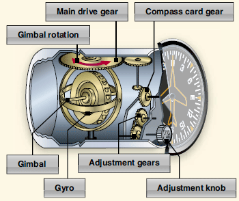
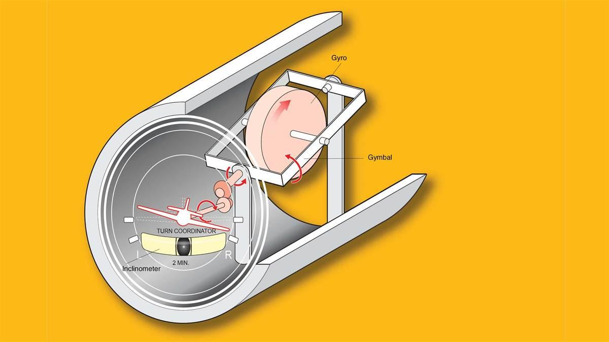
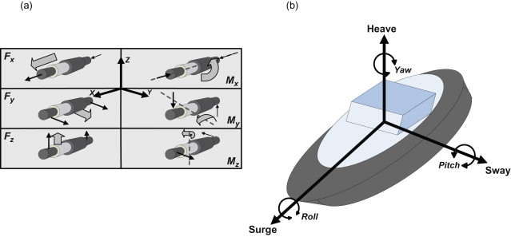

Heading Indicator
 Heading Indicator constructionBasically, the heading indicator is a mechanical device meant to facilitate the use of the magnetic compass. Errors in the magnetic compass are numerous, making it difficult to achieve straight flight and precise turns to headings, particularly in turbulent air. However the forces that make the magnetic compass difficult to perceive are not influenced by a heading indicator.
The working of the heading indicator depends on the rigidity principle in space. In a vertical plane, the rotor turns and a compass card is attached to the rotor. The points on the card keep the same location in space relative to the vertical plane of the gyro since the rotor stays rigid in space. The aircraft simply rotates around the rotating gyro, not the other way around. Since the instrument case and the aircraft revolve around the vertical axis of the gyro the card offers simple and precise heading information.
The heading indicator creeps or drifts from a heading to which it is fixed due to precession caused by friction. The amount of drift depends largely on the state of the instrument, among other factors. The drift could be extreme if the bearings are tired, dirty, or poorly lubricated. The fact that the gyro is centered in space and the Earth is revolving in space at a rate of 15° in 1 hour this creates another error in the heading indicator. The heading indicator may therefore indicate as much as 15 ° error for every hour of service, discounting precession induced by friction.
A magnetic north reference is obtained from a magnetic slave transmitter by certain heading indicators referred to as horizontal situation indicators (HSI) and typically requires no modification. A magnetometer is known as the magnetic slave transmitter.
Turn Coordinator
 Turn Coordinator constructionOne of three gyro-driven instruments in your training airplane panel is the turn coordinator. The gyro of the turn coordinator is positioned at a 30-degree angle upward from the aircraft's longitudinal axis.
The turn coordinator is essentially two instruments in one. It detects motions of rolling, yawing, and turning, and shows those movements through two components: a needle that looks like an airplane that rotates right or left, and the inclinometer, a black ball suspended in liquid that rolls right, left, or stays in the center, depending on whether during a turn you apply the right amount of rudder. The turn coordinator is comparable to the turn and bank indicator that senses the roll and shows the turn rate.
The electrical device will power up the gyro of the turn coordinator when you turn on the airplane's master switch, and its alarm flag should be stored within around 30 seconds to let you know that it is functional. (The whirring noise you hear when you turn on the master switch is likely the gyros in the turn coordinator spinning up.) However the flag just signals the existence of electrical energy. The turn coordinator will struggle and read incorrectly if the gyro stops running. Some turn coordinators are only operated by the vacuum pump in older aircraft.
Attitude Indicator
AIs, also referred to as gyros or artificial horizons, work with a gyroscope that displays the height at which the aircraft is ground-oriented. The degree of bank or roll is indicated by rotating the gyroscope around the longitudinal axis, while the lateral axis indicates pitch-nose up, nose down or level. At a lateral axis for pitch attitude, and a longitudinal axis for roll, the gyroscope is gimbaled.
The gyroscope operates when rotating by producing a rigidity in space and is positioned to take the tilting of the instrument into account. An AI operates properly when its gyroscope remains vertically upright while the aircraft rolls and pitches around it
There must be minimal friction on the bearings in AIs. A small amount also puts a pressure on the gyroscope, causing it to tilt. To mitigate this tilting, when the gyroscope tilts from its vertical location, a mechanism within the instrument applies a force. The gyroscope is restored by this force to its upright position.
In addition to the rotor assembly, all mechanical gyroscopes in a gimbal assembly have inner and outer bearings. Bearings contain anti-friction bearing oil and are made to work at high speeds.
Inertial Navigation Systems
 Example of the INSINS are navigational systems that are used to calculate the position of the aircraft, usually relative to a reference point or to a set coordinate. An INS is composed of at least 3 orthogonal gyroscopes and 3orthogonal accelerometers, which enable them to derive and calculate a navigation route for the pilots. This reading provides the heave, sway and surge (X,Y and Z coordinate). In Aviation, this is known as a type of dead reckoning system. The concept behind this INS system is known as the measurement of changes in relative motion (Measurement of acceleration).
By using the accelerometer to measure the translational acceleration and the gyroscope to measure rotational acceleration. We are able to derive the position of the aircraft at any definite time. The INS can provide us with a continuous and reliable determination on the position.
INS with different capabilities fall into two groups, Gimbaled and Strap Down. One that requires a rigid frame with rotating bearings is a gimbal device. The assisted body would be free of rotational inertia if the bearings could be made frictionless and the frames perfectly balanced. It can feel some torque from bearing friction or instability due to frame balance when a gyroscope is placed in the frame. Feedback can be given to zero out all the forces that do not have a relevant impact on the gyroscope. At least three axes or gimbals are required to isolate a supported body and are referred to as roll, pitch, and yaw.
With one important difference, the inertial sensors in a strapdown system are just like those in a gimbal rig. There is no mechanical correction scheme. The gimbaled structure that is assisted is missing. The sensors are all anchored or "strapped down" to the monitored object. The machine conducts all the calculations in this type of scheme to fulfill the maximum six degrees of motion. Strapdown platforms are more sensitive than gimbaled units to shock and vibration. When installing these devices in areas where vibration may influence the operation of the system, special precautions need to be taken.
Click this for the next section: Beneficial use of gyroscopes in the flight instrumentation and avionics systems..